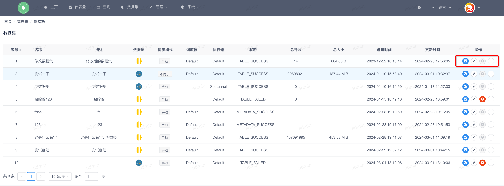
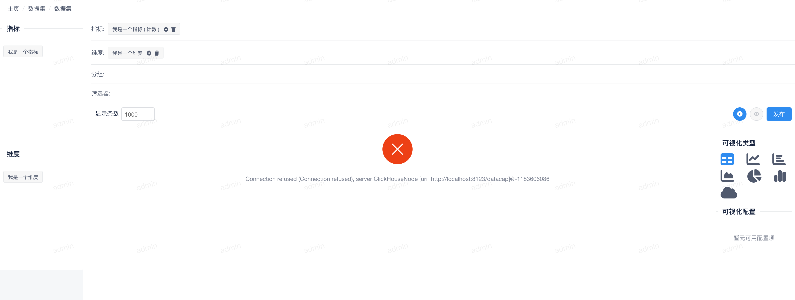
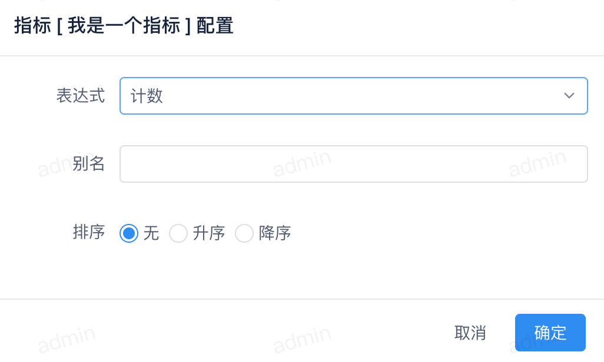
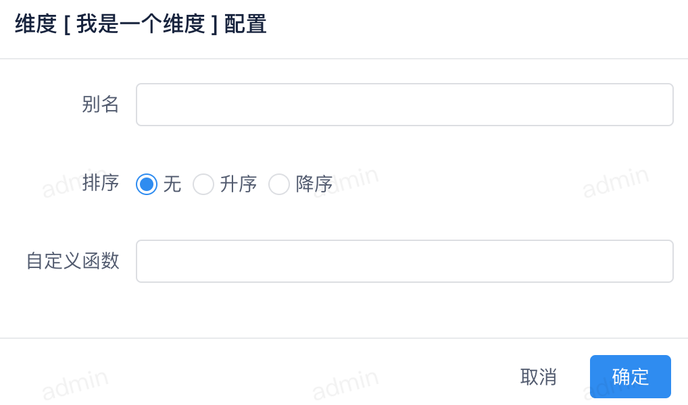
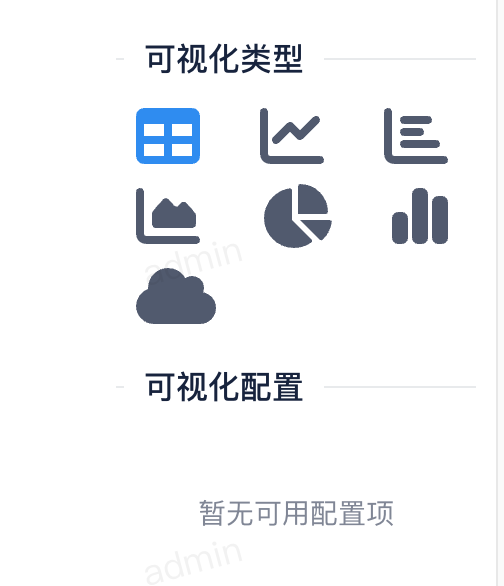

即席查询
在数据集列表中在每行数据的末尾有 操作 按钮，大概如下

我们点击 操作 按钮后会跳转到 即席查询 页面
页面分为左右两侧，左侧是当前数据集的 指标 & 维度 配置，右侧是 查询 配置
当拖拽左侧的 指标 & 维度 时会在右侧显示查询结果

指标配置¶
当查询列包含指标时，点击配置按钮，弹出如下窗口

可以配置当前指标的 表达式，别名，排序。
Warning
不同的类型指标包含不同的表达式
维度配置¶
当查询列包含维度时，点击配置按钮，弹出如下窗口

可以配置当前维度的 别名，排序，自定义函数。
图表配置¶
当查询成功后，可以配置多种图表类型。

可以根据自己的需求定制目前已经支持的图表。
发布图表¶
图表配置完成后，点击 发布 按钮，弹出如下窗口
配置图表的名称后点击 发布 按钮，图表发布成功后，可以在图表列表中查看。
最后更新:
March 1, 2024
创建日期: March 1, 2024
创建日期: March 1, 2024